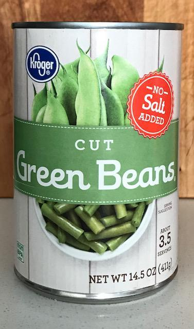
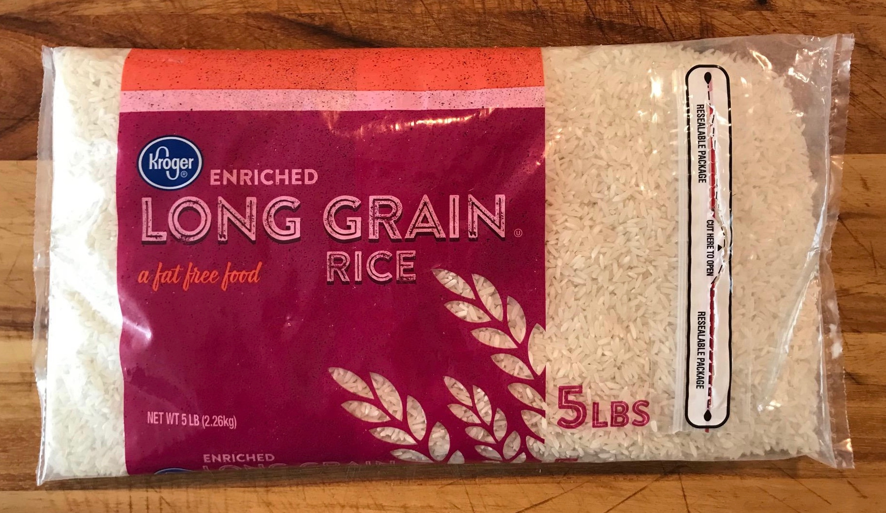
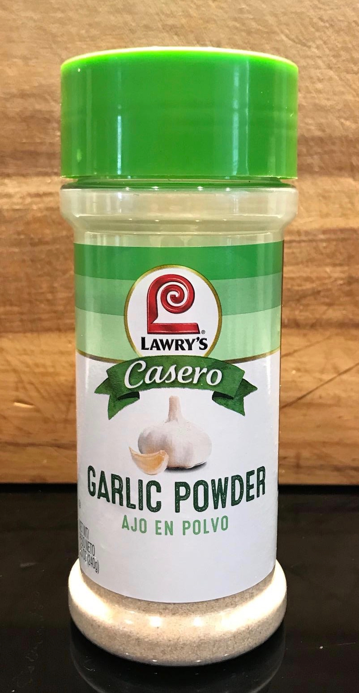
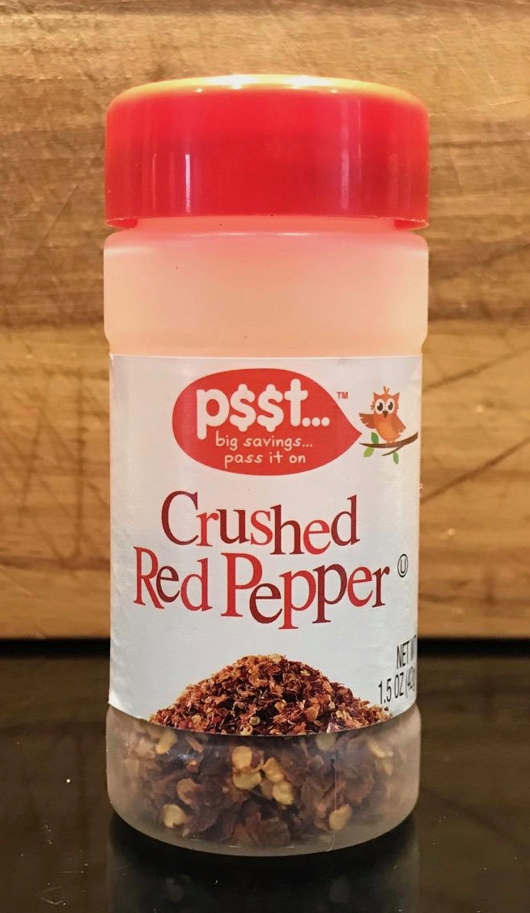
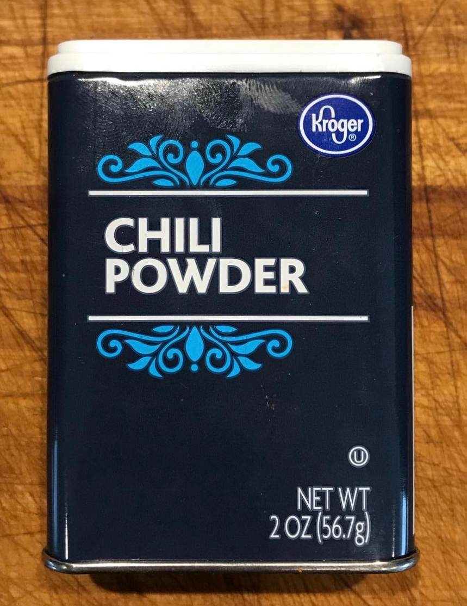
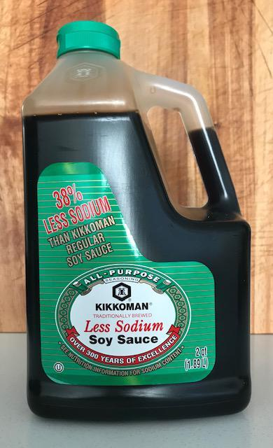
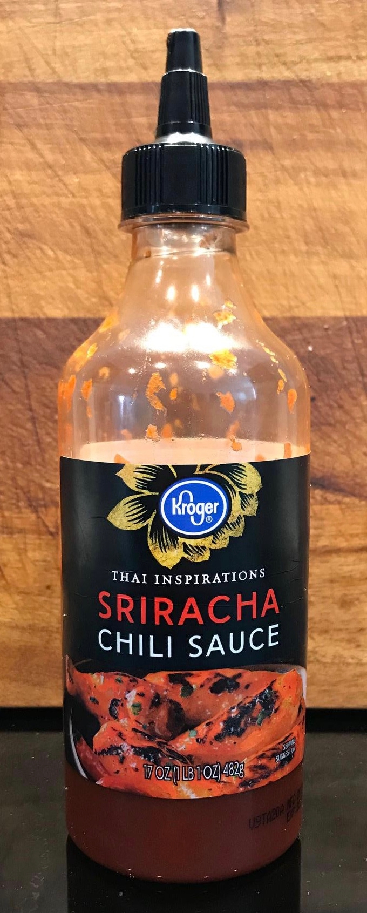
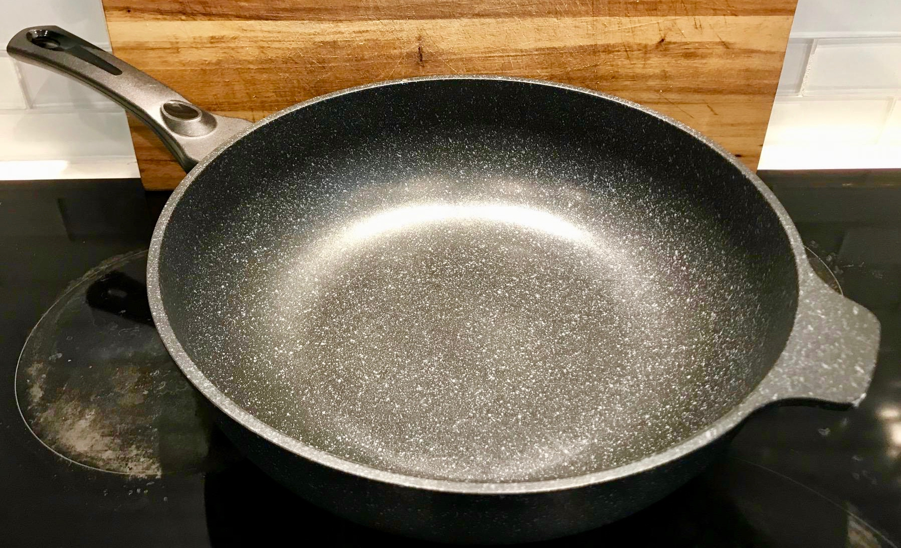
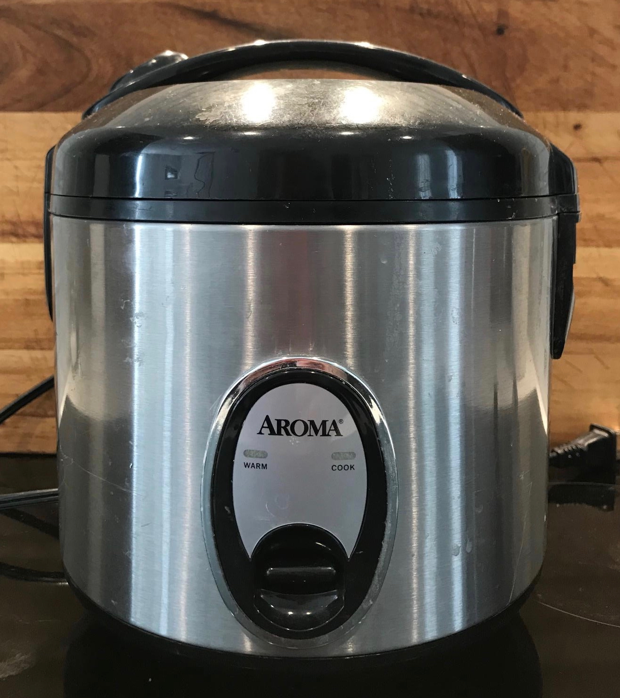

Bowen Scrambler
Ingredients
- sliced carrots, 1 can
- cut green beans, 1 can
- eggs, 6
- rice (e.g. long grain white), 2 cups
- coconut oil, 3 tbsp
- lemon juice, 3 drops
- garlic powder, to taste
- red pepper flakes, to taste
- chili powder, to taste
- sauce of choice added before serving (e.g. soy sauce, green salsa, sriracha)








Kitchen Gear
- large wok, preferably non-stick
- rice cooker


Commentary
- Fills 5 22 oz meal prep containers such as
these.
I typically take this for lunch for a whole 5 day work week.
- Eggs:
- For fast and easy, crack the eggs directly into the wok and break and mix the yokes as you distribute over vegetables
- For even texture, beat in a bowl before pouring over vegetables
- Start the rice about 10 min before anything else so it's ready when needed
- Before eating (after reheating if necessary) season to taste with soy sauce, green salsa, sriracha, or any sauce of choice
- You can always add meat for extra taste and texture. Chopped sausage is a favorite. If adding meat, cook low and slow in wok before adding vegetables.
Cook Rice
- In a rice cooker, add
- 2 cups rice (I usually use long grain white rice)
- water to preferred moisture, around 2.25 cups
- 3 drops of lemon juice
- Stir to distribute ingredients and start the rice cooking
Cook Vegetables and Eggs
- Add 3 tbsp of coconut oil to a large wok and set to medium heat
- Add 1 can sliced carrots and 1 can cut green beans to the wok and bring to sizzle
- Occasionally mix well until the vegetables have been sizzling for 5 min
- Pat the vegetables to a level surface and add 6 eggs on top
- Distribute the eggs over top of vegetables
- Once the eggs begin to cook and bubble, mix vegetables and eggs together
- Continue occasional mixing until eggs are cooked to taste
- Add garlic powder, red pepper flakes, and chilli powder to taste then mix well
- Add cooked rice and mix until all ingredients evenly distributed
- Before serving, season with sauce of choice to taste (soy sauce, green salsa, etc.)
- Enjoy!